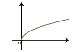
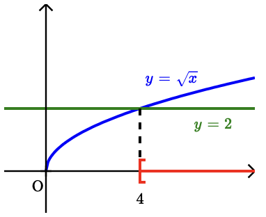

Formules, fonctions et statistiques
QCM à réponse unique — choisis une proposition pour révéler la correction immédiatement.
Même QCM, sans correction — ton score apparaît une fois toutes les questions complétées.
On remplace $a$, $b$, $c$ et $d$ par les valeurs données :
$\begin{aligned} F &= \dfrac{2}{\dfrac{1}{7}} +4 \times \dfrac{3}{5} \\\\ &= 14 +\dfrac{12}{5}\\\\ &= \boldsymbol{\dfrac{82}{5}} \end{aligned}$
La bonne réponse est la réponse D.
On cherche si les fonctions $f$ peuvent s’écrire sous la forme $f(x)=mx+p$. $\bullet$ En développant, on obtient :
$\begin{aligned} f_1(x)&=x^2-(x+3)(x-5)\\\\ &=x^2-(x^2-5x+3x-15)\\\\ &=x^2-x^2+5x-3x+15\\\\ &=2x+15 \end{aligned}$
On retrouve une forme $mx+p$, donc $f_1$ est une fonction affine.
$\bullet$ $f_2(x)=5\sqrt{x}+3$
Cette fonction contient un terme en $\sqrt{x}$, elle n’est donc pas affine. $\bullet$ $f_3(x)=\dfrac{3}{x}-6$
Cette fonction contient un terme en $\dfrac{1}{x}$, elle n’est donc pas affine.
Uniquement la fonction $f_1$ est affine.
La bonne réponse est la réponse A.
$\begin{aligned} \left(-1\right)^{n+4}&=\left(-1\right)^{4} \times \left(-1\right)^{n} \\\\ &=1\times \left(-1\right)^{n} \\\\ &=\boldsymbol{\left(-1\right)^{n}} \end{aligned}$
La bonne réponse est la réponse A.

\end{multicols} L’ensemble des solutions $S$ de cette inéquation est :Pour résoudre graphiquement cette inéquation :
$\bullet$ On trace la courbe d’équation $y=\sqrt{x}$.
$\bullet$ On trace la droite horizontale d’équation $y=2$. Cette droite coupe la courbe en $2^2=4$.
$\bullet$ Les solutions de l’inéquation sont les abscisses des points de la courbe qui se situent sur ou au dessus de la droite.

Comme la fonction racine carrée est définie sur $[0\ ;\ +\infty[$, l’ensemble des solutions de l’inéquation $(I)$ est : $S = [4\ ;\ +\infty[$.
La bonne réponse est la réponse B.
Appelons $x$ la valeur cherchée.
On commence par calculer la somme des valeurs de la série de l’énoncé :
$7 + 11 + 15 + 7 + 5 = 45$.
Comme la série de l’énoncé contient $5$ valeurs, la nouvelle série avec $x$ en contient $6$.
On peut calculer sa moyenne avec l’expression : $\dfrac{45 + x}{6}$
Comme cette moyenne vaut $10$ d’après l’énoncé, il faut alors résoudre l’équation :
$\dfrac{45 + x}{6} = 10$
$45 + x = 10 \times 6$
$x = 10 \times 6 - 45$
$x = \boldsymbol{15}$
La bonne réponse est la réponse B.
En notant $N$ le nombre total d’élèves, $25\ $% de $N$ est égal à $160$ élèves.
Puisque $25\ $%$ =\dfrac{25}{100}=\dfrac{1}{4}$, alors $N$ est $4$ fois plus grand que $160$.
Ainsi, $N=4\times 160$ élèves soit $\boldsymbol{640}$ élèves au total.
La bonne réponse est la réponse D.